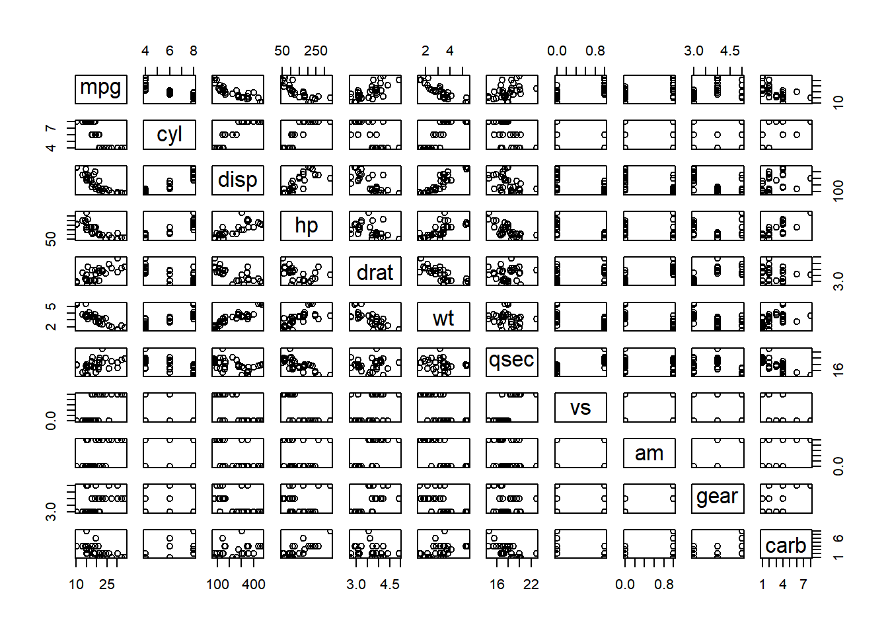
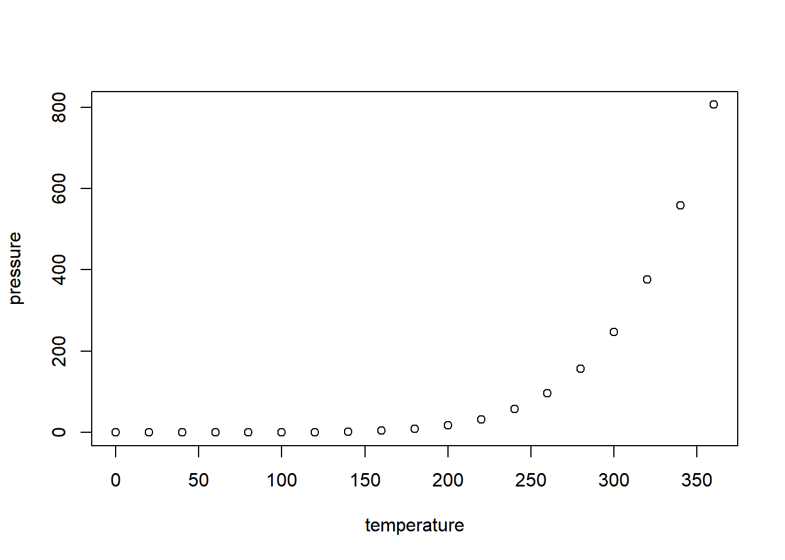
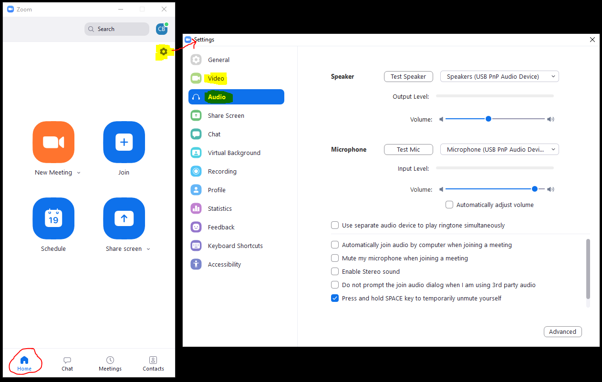

Introduction and Syllabus
Issues
- render just document with global yml
- create a newline
- one way: <br>
- another: nbsp (control-space in Visual)
- another: \ in Source
- caption numbering
- render changes only for objects within document (not generally)
- notes
- highlights
- log-click menu – ??asdf


Welcome to Graphing with GGPlot
The purpose of this class is to introduce students to the graphing package in R called GGPlot2 and the modularization techniques used by GGPlot2 to create plots. GGPlot2, developed by Hadley Wickham, is a powerful data visualization tool used to make publication-quality plots and it has one of the largest, and most active, R communities. GGPlot2 differs from other graphing packages by separating a plot into its component parts, making the code for the plot more reusable and extensible.
This class uses RStudio and is designed for students who have at least a basic background in programming – the equivalent of one semester of R, or any similar programming language (e.g., Visual Basic, JavaScript, C++).
Graphing with GGPlot is a self-paced and asynchronous online class. The amount of material in the class is about the same as a 1.5 credit, one semester class and students are expected to complete the class within three months. There are no regularly scheduled office hours but you can email the instructor anytime to ask questions or set up a Zoom meeting. All contacts will receive a response within one business day.
Instructor
Charlie Belinsky
belinsky@msu.edu
517-355-0126
About me…
I started my career as a Software Engineer for Motorola in Arizona where I developed software for military radios. From there I became a high school teacher in Port Huron, MI where I taught Computer Science, Web Design, and Physical Science. After that, I worked as an Instructional Designer for the College of Education at MSU where my main project was developing the hybrid graduate program. I currently work at the QFC where my primary job is developing online classes, including this one. In my free time you will often find me with a backpack deep in a forest or, as my picture testifies to, hanging out on a mountain in the Northern Cascades.
Technical Support
You can contact me, Charlie, regarding technical issues.
MSU also offers 24 hour technical support for students. This support includes hardware, software, and D2L.
517-432-6200 or 844-678-6200 (toll free)
email: ithelp@msu.edu
Make sure you have your MSU ID or MSU Guest ID when communicating with support.
Remember your MSU Guest ID is the email you log into class with if you don’t have an MSU email.
Class Requirements
Students should be familiar with basic programming structures like if…else, for(), and functions – material covered in a typical first semester programming class. All material for this course is online – no textbooks are required.
Tech requirements
Hardware: Any Windows (10 or 11), Mac, or Linux machine from the past ten years that has updates installed can handle all the hardware and software requirements of this class.
Browser: You can use any browser (Firefox, Microsoft’s Edge, Chrome, Safari) updated within the last couple of years.
Videoconferencing: We use Zoom for our videoconference meetings. The meeting link will be emailed to you prior to the meeting. It is recommended that you download and test your camera and microphone on Zoom before attending an instructor meeting. The easiest way to do this is to go to the Zoom test page. Note: Zoom’s test page will download Zoom for you.
To test your hardware in Zoom, open Zoom and make sure you are on the Home tab and click the Settings Icon Figure 1 and the Settings Window will open Figure 1. Go to the Audio and Video tabs to test your microphone, speakers, and webcam. If you are using a Mac, the view is different but the buttons are the same.

Accessing the class
You need an MSU ID or an MSU Guest ID to access the class. You can get an MSU Guest ID here. Your MSU Guest ID is the same as the email you used to get it.
Class Structure
The course has 12 lessons:
RStudio Projects and GGPlot Setup: Set up software and the programming environment for the class, go over the programming environment
Components: Getting data from a CSV file, scatterplots, breaking down GGPlot components
Mapping and Aesthetics: code spacing, mapping data to different aspects of a plot (size, color, shape), adding legends
Elements and Styles: modifying plot and canvas components, RGB colors and Unicode
Date Objects and Theming: proper formatting and converting of Date objects, creating your own GGPlot theme
Modifying Mapped Elements: changing the properties of data elements on a plot, color gradients
Faceting: break up plot data horizontally and vertically
Boxplot: mapping data to a boxplot, faceting boxplots, outliers
Reshaping and For Loops 1: two different methods for mapping data from a complex data frame
Reshaping and For Loops 2: methods for plotting subset data within a data frame, text plots
Annotations: adding non-data elements to your plot (e.g., text, points, lines)
Multipaneling: arranging and customizing plots on a canvas, regular expression
Lesson Application
All lessons have an Application section at the end that will ask you to apply what you learned in the lesson in your own script. The Application is the only product that gets evaluated. There are no tests and there is no final exam.
Lesson feedback
Each application has these three questions regarding the lesson:
What was your level of comfort with the lesson/application?
What areas of the lesson/application confused or still confuses you?
What are some things you would like to know more about that is related to, but not covered in, this lesson?
These questions are vital for feedback in this class and far more useful to me than end-of-class surveys as they give me real-time information. Please take a few minutes to answer these questions. Feedback from these questions has become my main way of improving the class. In return, I promise to address concerns and questions from your responses.
Extensions and Traps
Many of the lessons contain optional content called Extension and Traps. Extensions contain material that goes beyond the lesson’s objectives and Traps capture some of the common issues students have with the lesson’s objectives. There are links to Extensions and Traps within the Content area of the lesson. Clicking on the appropriate link takes you directly to the Extension or Trap. Extension: testing the extension link.
Student-Instructor Meetings
Student-instructor meetings will be done on an as-needed basis and meetings can always be requested by the student. Meetings are preferably over Zoom so that screens can be shared.
Lesson features
This sections goes over some of the technological features built into the lessons.
Resizing Pictures
Most pictures in the course can be resized so that the picture is out of your way when you don’t need to view it. Clicking on the picture toggles it between the minimized and maximized states (fig ##).
Test picture to toggle (Ninh Bình, Việt Nam)
Figures and references
When you click on a figure reference (e.g., fig ##), the caption on the figure will highlight for 2 seconds.
If the figure is not on the screen, then the page will scroll to the figure and highlight it. For instance, clicking on fig ## will take you to the Zoom figure near the top of this page. You can return to this position by long-clicking and selecting Return to the Previous Position
Printing lessons and saving lessons to PDF
You can print any lesson or save it as a PDF by clicking on the Printer icon at the top of every lesson (and this syllabus). This will bring up a print dialog (fig ##) and you can print the lesson to a printer. On most machines, you can also choose a PDF device as a printer – this will save the lesson as a PDF document.
Note: Using your browser’s print feature instead on the Print link will print out the whole webpage instead of just the lesson.
This author has two print-to-PDF devices – the Microsoft Print to PDF, which comes with Windows 10 and 11, works fine
Print-to-PDF Software
If you are using Windows 7 or 8 you might not have a PDF device and you will need to download Print-to-PDF software. You can see if you have a PDF device by going to the print options in any program and see if any of the devices have “PDF” in their name (fig ##). If you don’t have a PDF device, then I recommend you install CutePDF(direct link to the file download). CutePDF is simple print-to-PDF software that does not try to install any extra software on your computer. Trap: Bloatware
Codeblocks
Double-clicking on a codeblock will select all the text in the codeblock and copy it to the clipboard – you can then paste it into RStudio (or any other text editor).
# the next two lines should be at the top of all your scripts
rm(list=ls());
options(show.error.locations = TRUE);
# create three variables: d, t, and v
# give d and t values and use them to calculate v
d = 100;
t = 20;
v = d/t;Double clicking on the codeblock selects all the text and copies it to the clipboard
Personal statement from Charlie
The biggest thing that is lost when you move a class from a face-to-face environment to an online environment is the daily interaction between the instructor and the students. These interactions provide invaluable informal feedback for the instructor and, I would argue, are the main tool that an instructor uses to make improvements to their class. It is impossible to replicate this in an online class but I ask that you help me out and make an effort to communicate to me the little things. This could mean technical nags like content not appearing properly or pages loading too slowly, lesson content that is unclear, grammar and spelling issues, or scripts that does not work or work in a way that you do not understand.
Thank you for reading and taking this into consideration. In the end, it is the interactions between an instructor and the students that make a class great.
Now on to the stuff I have to put in a syllabus…
Disclaimers and Loose Ends
Student Responsibilities
Students are expected to regularly check the Announcements section on the home page for the class and the email address associated with their MSU ID/ MSU Community ID for new information regarding the class.
Students are expected to ask questions if they are having problems with an application or their class project.
Students are expected to monitor their progress in order to complete the course work on time.
Students are expected to contact either the instructor or MSU regarding technical issues that are interfering with the class.
Students are expected to follow the MSU’s academic integrity policy.
Please notify the instructor regarding issues with the class website and lessons.
Academic Integrity (summarized)
Written or other work which a student submits in a course, shall be the product of his/her own efforts. Plagiarism, cheating, and all other forms of academic dishonesty are prohibited. Students are expected to adhere to the ethical and professional standards associated with their programs and academic courses. All applicable portions of Michigan State’s Policy on Academic Integrity apply to non-credit courses. Copies of the Policy on Academic Integrity may be accessed at https://www.msu.edu/unit/ombud/honestylinks.html.
Instructor Responsibilities
Instructor will be available for assistance for requested virtual office hours (through Zoom).
Instructor will respond to emails from students within 1 business day. Potential for delayed responses (e.g., instructor is on vacation) will be posted on the front page of the course.
Changes to the course will be posted in the Announcements section of the home page for the class.
Attendance
You are expected to log in to the class at least once a week. Logging in allows you to stay updated and see new announcements.
Participation
Please note that not all course lessons are the same length and the later ones tend to involve more work. Our goals with regard to participation/progress are to (a) keep you engaged in the course, (b) enhance the overall learning environment by promoting student-teacher communication, and (c) avoid a last minute time crunch for everyone involved. We will not be sympathetic or make allowances for your failure on course tasks or deadlines that result from not seeing announcements because you had not accessed the course for an extended period, and had not told us you would be away from the internet.
ADA Statement
MSU provides students with disabilities reasonable accommodations to participate in educational programs, activities, or services. Students with disabilities requiring accommodations to participate in class activities or meet course requirements should contact the instructor as early as possible.
For students needing accommodations for disabilities, please contact your instructor and The Resource Center for Persons with Disabilities at Michigan State University at 517-353-9642.
Trap: Bloatware
Adobe Acrobat, like most free software you download, attempts to bundle itself with software you most likely do not need nor want (i.e., bloatware). Make sure you take some time to read the optional offers whenever you download software. This author would argue that the main reason computers “slow” down over time is because of extra software that users unwittingly install.
Three offers from Adobe that you neither need nor want – this author recommends you uncheck them all.
Extension: Testing the extension link.
Hi, and welcome to the test Extension. If you clicked on the Extension link to get here then you can return to your previous location by long-clicking on this page and choosing Go to Previous Location.
If you just scrolled down to this point then, congratulations, you have reached the end of the document.